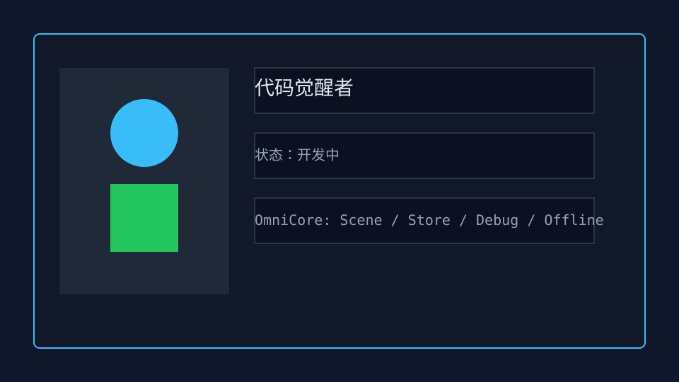
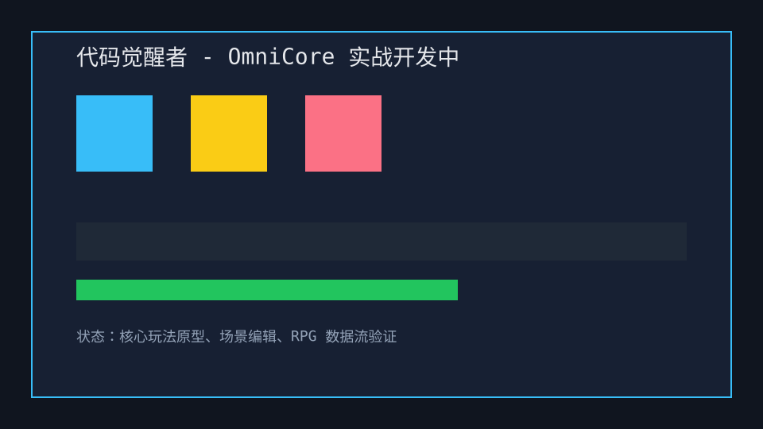
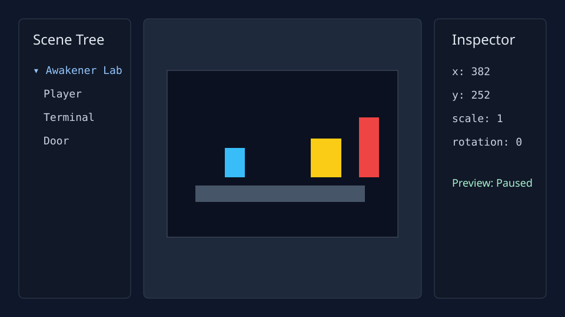

代码觉醒者



核心玩法
《代码觉醒者》是 2D RPG / 解谜混合案例：玩家探索终端实验室，通过事件表触发门禁、NPC 对话、道具检查和关卡状态变化。项目用于验证 SceneManager、Store、EventSheet、Tilemap Chunk、移动端输入和微信小游戏 4MB 包体门禁。
- 发布证据：`npm run build:wechat`、`npm run test:wechat`、微信真机调试手册。
- 质量门禁：lint、Vitest、benchmark、production-ready。
- 编辑器证据：场景树、Inspector、Prefab、Tilemap 和预览模式可复用。